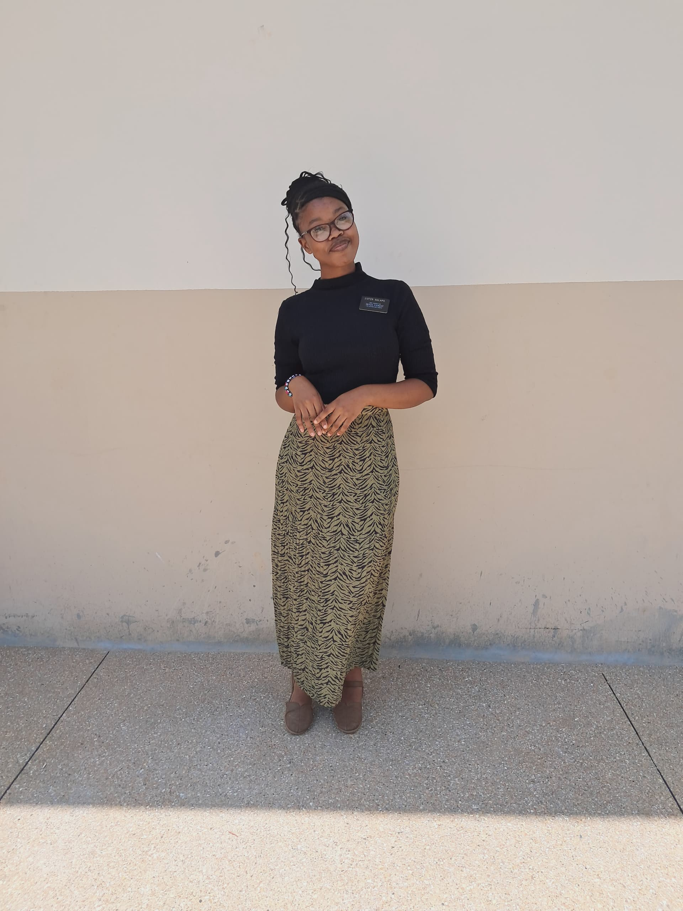

Kekeletso Nhlapo | WDD 130
Hello👋🏾! My name is Kekeletso Nhlapo, and I am from South Africa, Free State. I was born in a small town called Bethlehem.
I am the youngest of three children. I have a dog, his name is Sawyer. He is a German Shepherd.
I served a mission in Ghana, Kumasi. The best 18 months ever! I learnt a lot about myself and the gospel.
I am currently a student at BYU-I, and I am excited to share my journey in learning web development with you.
This home page is a part of my WDD 130 course work. It serves as a showcase of my learning and progress in web development.